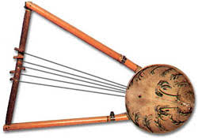
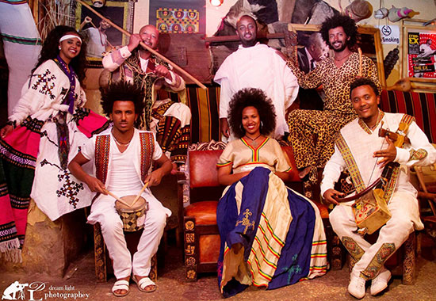
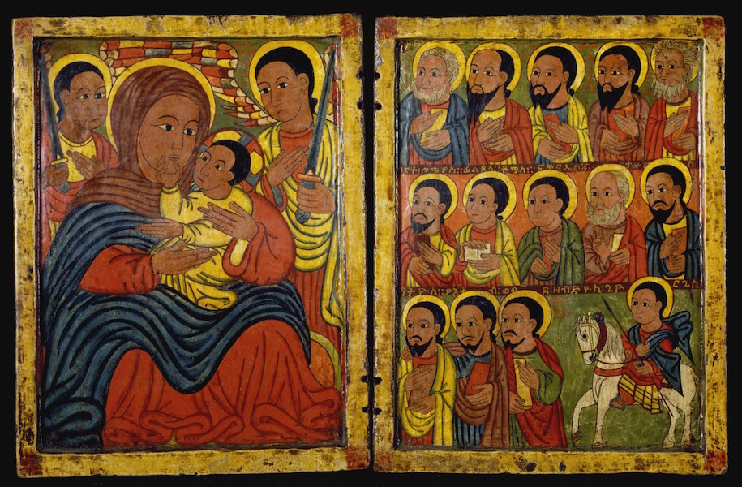
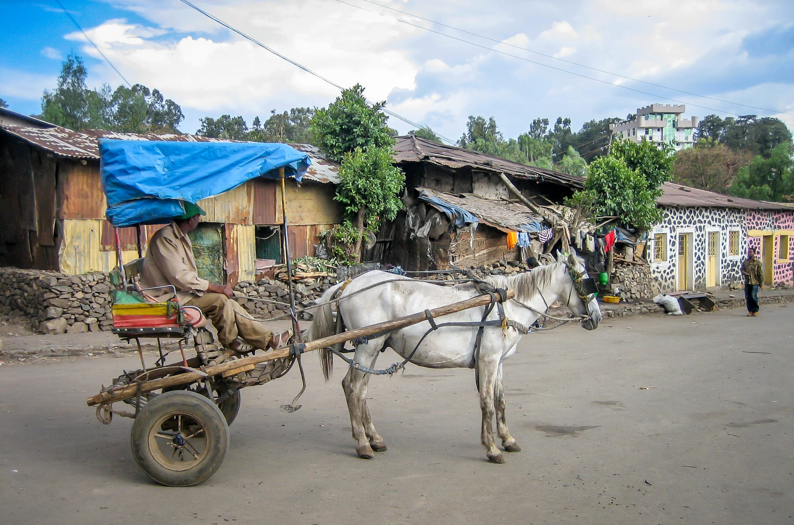
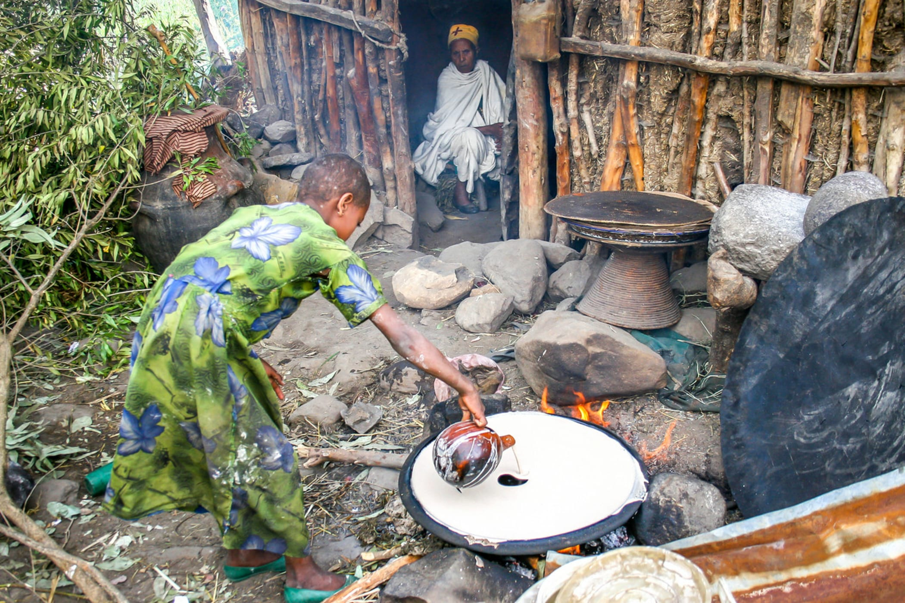
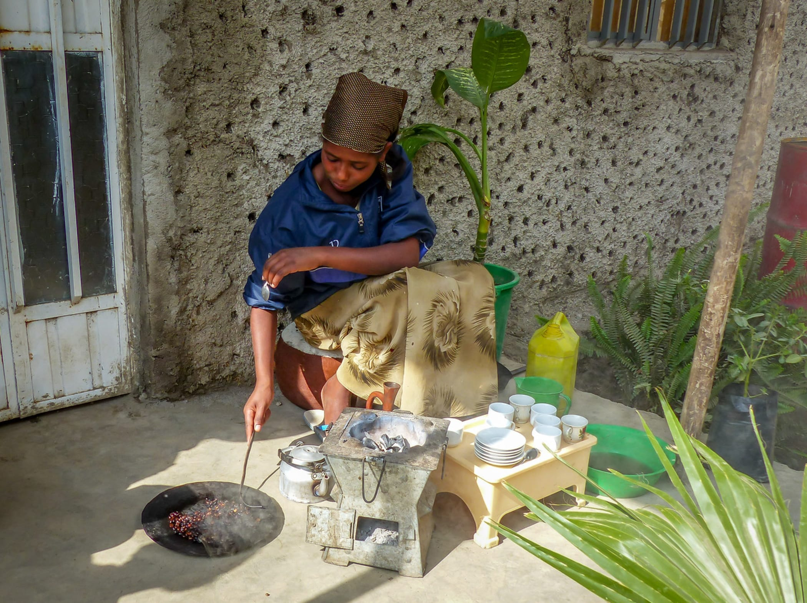
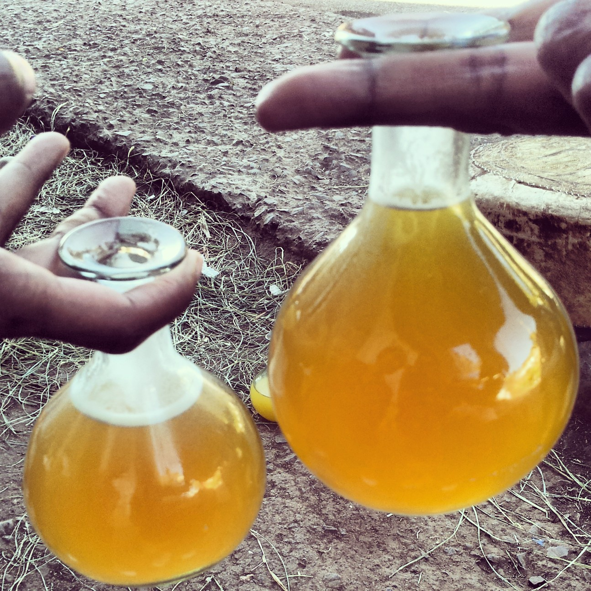

The culture of Ethiopia is diverse and generally
structured along ethnolinguistic lines.
The country's Afro-Asiatic-speaking majority
adhere to an amalgamation of traditions that were
developed independently and through interaction
with neighbouring and far away civilizations,
including other parts of Northeast Africa,
the Arabian Peninsula, India, Italy and Malaysia.
By contrast, the nation's Nilotic communities and
other ethnolinguistic minorities tend to practice
customs more closely linked with South Sudan and/or
the African Great Lakes region.
Sung in Amharic, manzuma has spread to Harar and Jimma,
traditional secular music is played by
itinerant musicians called azmari (Zageth),
who are regarded with both suspicion
and respect in Ethiopian society

Music
The music of Ethiopia is extremely diverse,
with each of the country's ethnic groups being
associated with unique sounds. Some forms of
traditional music are strongly influenced by folk
music from elsewhere in the Horn of Africa,
especially Somalia. However,
Ethiopian religious music also has an ancient Christian element, traced to Yared,
who lived during the reign of Gabra Masqal.
In northeastern Ethiopia, in Wollo, a Muslim
musical form called manzuma developed in 1907.
Clothing
In some central and northern areas,
women's traditional clothes are often made
from cloth called shemma.
It is basically cotton cloth,
about 90 cm wide, woven in long strips which
are then sewn together.
These traditional clothes are still worn on a day-to-day-basis in the countryside.
In cities and towns, western clothes are popular. However, on special occasions
such as New Year (Enkutatash), Christmas (Genna) or weddings, some wear traditional clothes.


Painting
Yet another unique feature of Ethiopian culture is its childlike
style of painting that is found in every church and other important
locations. This style seems to have remained almost unchanged for
centuries.
Figures are drawn in two dimensions, almost cartoon-like in
their direct and simplistic portrayal, with strong colours and
clear lines. The almond-shaped eyes are a particularly appealing
characteristic.
Transport
While Addis Ababa is much like any other African capital city with regards to its cars,
taxis, lorries and general bustle, elsewhere in Ethiopia private transport is rare.
The roads, largely unpaved, are mainly used by
people on foot, many individuals walking miles per
day to reach the nearby town or village. Carrying
abnormally large loads are the multiple donkeys who
peacefully and patiently
tread the daily route between home and market.


Foods and Drinks
Ethiopia is as individual in its food and drink as
it is in so many other aspects of daily life.
Even though the menu choice is not particularly wide,
the Ethiopian people delight in sharing what they have
with habesha and farengi alike.
While the outside world may think famine is a
permanent concern in Ethiopia, the majority of the
country are able to secure their daily sustenance,
either through growing their own food or exchanging goods at market.
A typical meal will consist of a large injera,
the size of a round coffee table, on which other
dishes are placed such as boiled vegetables, spicy sauces,
milk curds and on special days,
chicken, beef, lamb or fish.
The most commonly found dish is called shiro wat
(‘wat’ means sauce or stew)which is made from chickpeas
and is eaten at any meal of the day. The national dish is
doro wat which consists of pieces of chicken and hard-boiled
eggs served in a hot sauce made with a spice called berbera
(the predominant flavouring in Ethiopia).
The most commonly found dish is called shiro wat (‘wat’ means sauce or stew) which is made from chickpeas and is eaten at any meal of the day. The national dish is doro wat which consists of pieces of chicken and hard-boiled eggs served in a hot sauce made with a
spice called berbera (the predominant flavouring in Ethiopia).
Doro wat is usually
reserved for special occasions, particularly Ethiopian New Year.
A typical meal will consist of a large injera, the size of a round coffee table,
on which other dishes are placed such as boiled vegetables, spicy sauces, milk curds and on special days, chicken, beef, lamb or fish.
More affluent households will enjoy meat dishes such as ‘tibs’
(fried lamb) while on Wednesdays and Fridays and during the fasting
season, only animal-product-free dishes will be
consumed by most Orthodox Christians.

The national drink is coffee, originating in Ethiopia and providing one of the major
exports of the country. Every meal will, where possible, conclude or commence with
the coffee ceremony, when green coffee beans are washed, roasted, ground and boiled
in water; all this taking place on a bed of fresh grass and in front of the family or guests.
Many people say that coffee served in an Ethiopian home is the best they have experienced.
Shai (tea) is also popular in Ethiopia, and is usually served in small glasses with no milk and plenty of sugar.
Bottled water, Pepsi and Mirinda (fizzy orange)
are found everywhere and are sometimes consumed
in the home. T’eller is a ubiquitous and inexpensive
local brown beer with a unique flavour found in
the many t’eller bets in every village.
T’eller bets are usually someone’s home
(they are marked by an upturned tin can on a
pole outside the home) and, given most Ethiopian
homes have only one or two rooms, you will often
find children interspersed with beer drinking men!
T’ej is more often reserved for special occasions
and is a potent and cloudy honey-wine.
If you are invited you can expect to be well fed, and encouraged to eat more!
